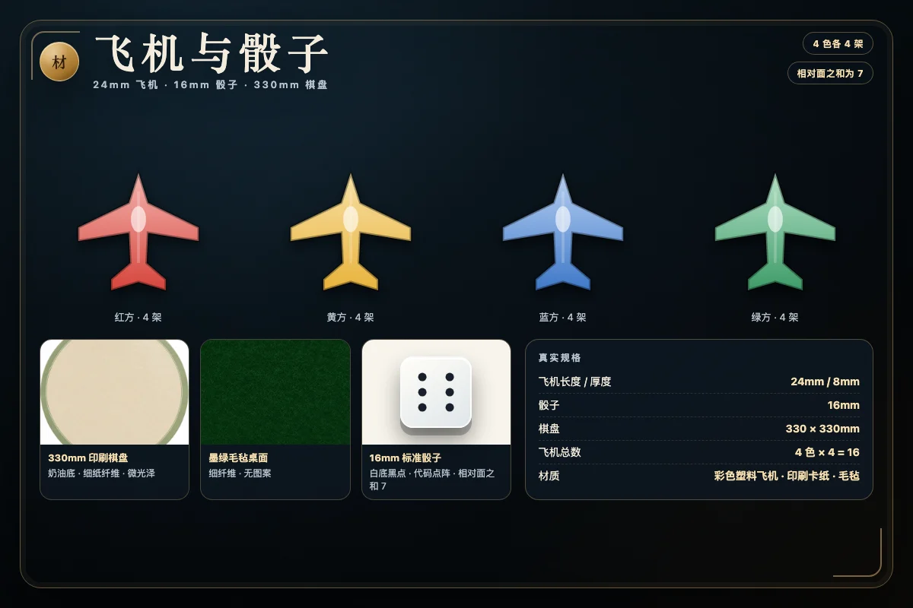

一、棋盘：真实 52 格彩环，不是简化十字盘
一副完整的飞行棋有四种颜色：红、黄、蓝、绿。外圈是一条由 52 格组成的环形跑道，四种颜色按固定顺序循环，因此每种颜色恰好 13 格。这个数字不是装饰：它决定每个玩家的起点、同色跳格的位置，以及一整圈之后进入归航道的位置。本站的引擎把 52 个格子、每格颜色、四个起点和四条归航道都写成了可验证的数据，测试里逐项检查“52 格、四色各 13 格”。
四个角各有一座基地，每座基地停 4 架飞机，所以四人局一共 16 架。每位玩家的起点就在自己颜色的格子上：红方起点在环形跑道的第 1 格，黄方在相对第 14 格，蓝方在相对第 27 格，绿方在相对第 40 格。绕完一圈后，飞机不会回到起点重新开始，而是从起点附近的入口转入自己的归航跑道。

中心是一个 2×2 的终点区。四条归航跑道的最后一格分别落在终点区的四个小格上，所以四家的终点在视觉上聚在一起，但每家仍然沿自己的跑道进入，不会互相撞子。归航跑道和终点区都是安全区：不触发同色跳格，也不会被敌机撞回基地。
二、人数、起飞与掷骰
本作支持 2–4 人。两人局使用红、黄两色；三人局增加蓝色；四人局四色全上。单人模式下，你控制红方，其余颜色由 AI 控制；联机模式按房间里的真实人数决定桌大小，至少 2 人、最多 4 人，空位由同一套 AI 引擎补足。
轮到你时先掷骰。只有掷出 6，才能把一架飞机从基地放到自己颜色的起点格上，这个过程叫起飞。掷出 6 并完成移动后，你还可以再掷一次；如果再次掷出 6，就继续再掷。掷出其他点数时，只能移动跑道上已有的飞机；如果跑道上没有飞机，或者所有飞机都因为点数不合适而不能动，就自动跳过。
连续三个 6 是惩罚。第三次掷出 6 时不再移动：最近一次用 6 移动的飞机回到基地，然后立刻换下一位。如果前两次 6 都没有可移动的飞机，那么第三次 6 只是跳过本回合。已经到达终点的飞机不受这个惩罚影响。
三、移动、同色跳格与虚线捷径
飞机沿外圈按固定方向前进，掷出的点数就是步数。落点结算分两步：先完成本次移动，再看落点是否触发奖励，最后结算撞子。
同色跳 4
如果落点的格子颜色与自己相同，飞机立即再前进 4 格。跳格只触发一次，不会因为跳完又落在本色格而继续连锁；但如果跳完的落点上有敌机，仍然会把敌机撞回基地。跳格不能越过外圈的最后一格：如果“+4”会超出第 52 格，这次就不跳，飞机停在原来的落点。
虚线捷径 +12
每条色带在接近归航的位置有一个虚线捷径口，对应相对进度第 36 格。飞机落在这个本色捷径口时，不走 +4，而是沿虚线直飞 12 格，落到相对第 48 格。捷径和 +4 不叠加，也不会在捷径落点继续触发跳格。捷径是追分的关键：中盘落后时，主动把飞机规划到第 36 格，往往比盲目追近一两格更有效。
注意相对进度的概念：每位玩家都从自己的起点开始数 0 到 51，所以“第 36 格”对四家来说是同一个相对位置，但落在棋盘上的绝对格子不同。四家的同色格都出现在相对进度 0、4、8……48，因此跳格与捷径的节奏对四家是公平的。
四、撞子、叠放与安全区
落点结算完奖励后，如果落点是一个外圈格，并且上面有敌机，那么这一格上的所有敌机都回到它们各自的基地，必须重新掷出 6 才能再次起飞。撞子只发生在环形跑道；归航跑道和中心终点区不撞子。
己方飞机采用同格共存的简化叠放规则：两架或更多己方飞机可以停在同一格，各自独立移动，不合并、不阻挡。它们不会互相伤害，但敌机落到这一格时，这一格上的所有己方飞机都会一起回基地。因此，把多架飞机堆在同一个关键格并不是绝对安全，反而可能被一次撞子清空。
起飞也可以撞子：如果自己的起点格上有敌机，掷出 6 起飞时会把起点上的敌机送回基地。这个细节在实战中很有用，尤其是对手故意占住你的起点时。
五、归航与精确终点
飞机走完外圈 52 格后，从自己的入口转入 6 格归航跑道，再进入中心终点。归航跑道不参与同色跳格，也不发生撞子；它只负责最后的精确点数。这里最重要的规则是：必须精确到达终点。
举例：一架飞机还差 2 格到终点，只有掷出 2 才能进入终点；掷出 3 或更大，飞机先触及终点，再按超出的点数往回退（例如还差 2 格掷 3，会退到还差 1 格的位置），这次移动不算到达终点。你可以改走别的飞机，或者接受这次退回。差 1 格时同理，只有 1 能进。已经到终点的飞机不再移动，也不会被撞回基地。
四架飞机全部到达终点的人获胜。多人局在第一位玩家完成四架后结束；其余玩家按“已经到达终点的架数”排名，架数相同再按总进度排名。也就是说，即使你没有第一个完成，尽量把更多飞机送进终点仍然能获得更好的名次。
六、三档 AI 与联机
单机模式提供三档 AI。入门从合法动作中随机选择；标准会评估前进距离、起飞、跳格、捷径、撞子和到达终点，优先能撞回敌机或接近终点的走法；高手在标准评估上追加威胁评估，检查自己的飞机是否落在对手 1–6 步可以到达的位置，并惩罚会把飞机送进危险区的动作。三档 AI 都只读取公开局面，不使用任何隐藏信息，也不会修改权威状态。
联机模式由服务端掷骰并保存全部飞机位置。客户端提交的动作只包含“移动第几架飞机”，不能提交骰子；公开视图会下发所有飞机位置和已经发生的骰子历史，但不会下发随机种子或未来的骰子。房间支持邀请码、密码、断线重连、超时 AI 托管、结果榜和重赛；一位人类开局时补 1 个 AI，两位人类按 2 人桌，三位或四位人类按实际人数开局。
七、常见问题
- 为什么必须掷出 6 才能起飞？
- 飞行棋把基地视为停机坪，只有 6 才允许一架飞机进入跑道起点。掷不到 6 时，基地里的飞机不能动；如果跑道上已有飞机，可以按点数移动它们。掷出 6 并完成移动后还可以再掷一次。
- 落在自己颜色的格子上会发生什么？
- 立即再前进 4 格，只跳一次，不连锁。若落点正好是相对进度第 36 格的虚线捷径口，则改为沿虚线直飞 12 格，而不是 +4。跳完后的落点仍然结算撞子。
- 两架自己的飞机停在同一格会怎样？
- 本作采用同格共存：己方飞机可以停在同一格，各自独立移动，不合并也不阻挡。但敌机落到这一格时，这一格上的所有己方飞机都会回基地。
- 终点可以超过吗？
- 不可以。必须精确点数；例如还差 2 格，只有掷出 2 才能进入终点。点数超过剩余格数时，飞机先到终点，再按超出的点数退回，这次移动不算到达终点。
- 连续掷出三个 6 会怎样？
- 第三次 6 不移动：最近一次用 6 移动的飞机回基地，然后换下一位。如果前两次 6 都没有可移动的飞机，则本回合直接跳过。已经到达终点的飞机不受惩罚。
- 被撞回基地后要重新掷 6 才能起飞吗？
- 要。被撞回基地的飞机回到出发前的状态，必须等该颜色再次掷出 6 才能重新起飞；已经到达终点的飞机不受影响。
- 联机会不会有人改骰子？
- 不会。骰子由服务端引擎生成并写入权威状态，客户端提交的动作只包含“移动第几架飞机”；公开视图只下发已经发生的骰子历史，不下发种子或未来随机数。
